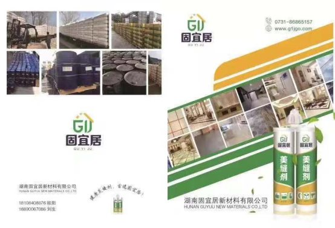
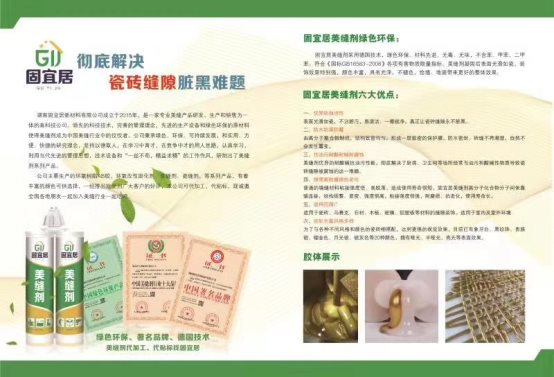
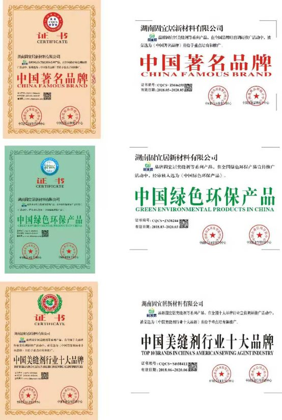
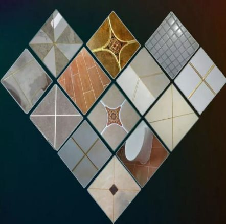
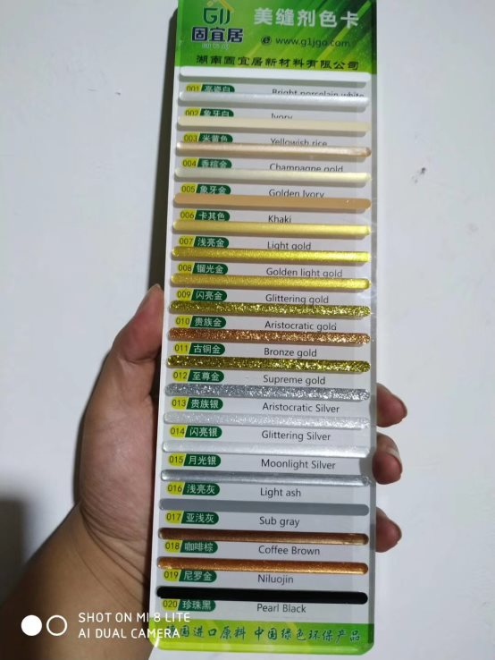

湖南美缝剂领导品牌
0731-86865157
-
美缝剂特性
- 环保安全：本品不含任何有害物质，挥发性有毒气体。
- 结构强韧：固化后坚硬如钻，具有耐磨抗酸性，耐腐蚀,耐高温，抗低温.
- 性能稳定：不收缩，不老化，不变质，无毒性，防水，防潮，防脏等多种特性。
- 不易开裂：综合塑粘剂，填补剂，刚性修复材料的优点，永不开裂，不渗水。
- 操作简单：采用自动搅拌出胶嘴，双组份自动搅拌均匀，无需手动，不会弄脏污染周边。
适用范围
可用于陶瓷，石材，玻璃，微晶石，仿古砖，木材，金属等不同产品之间的粘接填缝。
关于美缝剂配色
方法一：深色与浅色搭配。例如：黑与白、深与浅、深绿与浅灰等。这样的搭配会让人产生高贵、典雅的感觉。
方法二：相似色搭配。例如：黄与绿、红与紫、红与橙、橙与黄等。采用相似色搭配，易于达到和谐统一的效果。
方法三：对比色搭配。例如：红与绿、黄与紫、蓝与橙、黑与白等。对比色可以突出重点，产生强烈的视觉效果。在室内设计时，通常以一种颜色为主色调，其对比色作为点缀，以起到画龙点睛的作用。
方法四：同类色搭配。例如：浅金色、象牙金与深黄色，亮黑色与灰色。此种搭配亦可达到庄重而又不失奢华的效果。
方法五：无极色与暖色的搭配。黑、白、金、银、灰被称为无极色，它们可以和任何颜色进行搭配。选择亮色与其搭配，典雅之中又不乏活泼。
方法六：冷色与暖色的搭配。冷暖色的关系是依靠对比，由人的自然生活经验而产生。暖色的和谐与热情配上冷色的清凉与高雅，会产生别具一格的视觉效果。
美缝剂使用技巧
1、对于缝隙大于3mm的粗缝，采用半填的方法，因此美缝剂需要填缝剂垫底，而且底越平整干净做出美缝剂效果越好。
2、空鼓地方不能做美缝剂。由于瓷砖空鼓人踩上面会发生形变，超出美缝剂所受拉力范围，时间一长美缝剂空鼓的地方就会脱落。
3、美缝剂最佳施工时间。美缝剂施工一般在进家具之前，这样不用来回搬弄家具，也不会因为施工给美缝剂带来破坏，美缝剂施工要求比较高，施工时瓷砖缝隙不能有灰尘、脏物、小石子、油渍、水等，如果有这些会影响美缝剂最终效果。
4、美缝剂是速干型的和普通填缝剂不一样，美缝剂一次施工最多50cm，就要用湿海绵擦除溢出的美缝剂，不然就会粘在瓷砖边上弄不下来，到时候即使刮掉也还会有少量残余，人用脚一蹭就会变黑，不但没有达到美缝效果，只会比原来更糟。
市场上十大排名的美缝剂
1. 卓高
卓高是目前国内销量最大的美缝剂品牌，定位中高端，之前被3.15选为“消费者可信赖产品”，也是入选CCTV央视网商城的美缝品牌。这家公司最初以研发起家，所以技术实力过硬。不同于国内一些美缝剂品牌存在的“贴牌”现象，它有自己的多个生产工厂，业内有一些“大品牌”的美缝剂其实就是找他们代工的。
对于消费者来说，除了性价比高，卓高最赚用户口碑的地方在于它提供的施工服务：系统化培训的专业美缝师和全国1000多个城市服务中心。经历过瓷砖填缝的房主都知道，专业的美缝师傅太重要了，而一般的施工服务队水平参差不齐，难保以后使用不出问题。
2. 壹家美缝
壹家美缝是定位高端美缝的后起之秀，拥有国家新型实用证书和绿色环保推广产品证书。它的优势在于科技创新和环保材料，产品也以美缝剂中相对高端的水瓷、环氧树脂为主，主打的是时尚美观和环保安全两个卖点，并大胆的提出“永不脏黑”的口号。
假如是对视觉效果和绿色环保更在意的用户，壹家美缝就是很适合的品牌。另外他们的产品追求操作简单化，哪怕是普通的装修师傅，也可以很快上手。产品成型时间也较短，一般施工服务后3个小时可以达到使用效果。
3. 缝美家
缝美家是成立接近20年的老品牌，曾生产过粘砂宝、水不漏等全国热销产品。后来开始研发填缝剂产品，如今是定位中端的美缝剂品牌。在之前的新闻报道中，它是国家“一带一路”推广战略中美缝剂行业唯一入选的品牌。
缝美家的产品主打性价比，常见的真瓷、水瓷、环氧，他们都有相关产品，但价格更加亲民。同时它借鉴了卓高的成功经验，大力在全国推进服务中心的建设，虽然目前只有100多个，还没有达到卓高的覆盖水准，但发展速度非常快。
4. 彩牛
彩牛是一个从填缝剂流行时就进入行业的品牌，产品涵盖勾缝剂、填缝剂、美缝剂三大类，定位中端和性价比。它在北京有自己的工厂，在引进国外成熟技术和先进设备方面很积极，产品在民用领域和酒店装修两方面很受欢迎。
对于想追求性价比和色彩多样的用户，彩牛比较适合。它的美缝剂可选颜色多达24种，视觉效果也比较亮丽纯正。主打的是环保、不变形和不褪色三大卖点。
5.卓彩
卓彩也是进入行业较早的一个品牌，至今也有10多年历史。产品定位中端，专注于解决瓷砖常见的发黑发黄，美缝剂产品主打色彩细腻、种类多样。它的优势在于开放性，与多家跨国化工企业有长期合作，在研发方面有自己的独到之处。
作为定位中端的产品，卓彩的购买方式更多样，它在taobao有品牌独立运营的专营店，假如是不想花太多时间出门选购的用户，卓彩是较适合的选择。
6.希杰
希杰是专注创新研发的年轻品牌，拥有多项国家专利，产品定位中高端。它的母公司在香港，目前国内的营销中心在武汉。希杰的优势在于把更先进的技术和瓷砖填缝概念引入国内。
假如是有不同房间使用需求的用户，可以首先考虑希杰。它的产品涵盖范围更广，对于不同地面情况、不同房间功能有更高的可选性，另外同类产品也细分了不同价格段供各类用户选择。
7.凡东尼
凡东尼是定位中低端的知名美缝剂品牌。它的优势在于自己有研发实力，并且在武汉有自己的工厂，颜色和风格也比较丰富，可选性高。
假如是追求性价比的用户，可以考虑凡东尼。
8.汗高白德
百得是德国汉高集团旗下的子品牌，目前在上海开设有分公司。汉高在华工方面有百余年的沉淀，百得这个品牌也有近60年的历史，所以产品质量不存在争议。
百得的美缝剂产品虽然没有宣传定位高端，但是价格较高，购买也并不是很方便。假如不是非洋品牌不买，百得可以作为备选而非首选。
9.德高
德高是一家源于澳大利亚的建材品牌，产品定位高端，目前在广州设有分公司。德高进入中国已近20年，在多个城市设有子公司，并且在上海设立了研发中心，产品质量过硬。德高的美缝产品更多用于专业用途，同时价格较高，主打防水这个卖点。
10.西卡
西卡是源于瑞士的知名化工品牌，至今有百年历史，产品定位中高端。它的优势在于领先的技术实力，在粘结和密封领域西卡处于领先地位，因此其美缝剂产品值得信赖。近年西卡对中国市场越发重视，在国内建有多达10个生产工厂，不过就同其他洋品牌一样，西卡的价格也较高，假如要选择它，需要注意通过正规渠道购买正品。
新闻文章
1.固宜居美缝，呵护您的环保新生活
如今房价一直居高不下，许多人正背着巨额贷款过日子。虽然大家辛辛苦苦攒了积蓄才买到属于自己的房子，但我们更不能忽视的是装修环节。买房时考察的是地产开发商、房子地理位置，但装修注重的一定是产品品质，谁不想一推开门就看到自己舒心、整洁的家呢？
现在大多数年轻人都比较注重产品品质，所以无论买房还是装修，都必然会选择好一点的、专业点的。毕竟很多东西“宁缺毋滥”，谁也不想为劣质产品买单，更不愿意为劣质产品使用中产生的麻烦而闹心。

因此,美缝剂作为一种兼具美观性和功能性的优势得到越来越多人的青睐，那么今天我们就来了解一下固宜居的美缝产品为什么会如此受欢迎呢？
固宜居公司作为美缝行业的领导者，入驻佛山陶瓷总部基地，与各大品牌瓷砖厂家达成战略合作，提供一砖一 配色服务,匠心，让每一米缝隙更有温度，让每一个空间更有内涵，入驻佛山陶瓷总部基地，与各大品牌瓷砖厂家达成战略合作，提供一砖一 配色服务,匠心，让每一米缝隙更有温度，让每一个空间更有内涵，

固宜居有优异的自洁性，防油、防水、防污、易清洗、一擦就净，可以解决瓷砖缝隙脏黑的问题，避免缝隙滋生细菌危害健康。采用进口环氧树脂和固化剂，固化后硬而有韧性，解决了因热胀冷缩而造成的爆砖，崩瓷，开裂等难题，特别适合北方有地暖的地区。
固宜居美缝剂为双组份环氧树脂类绿色环保产品采用优质进口环保材料、先进设备工艺精制而成，色彩丰富、艳丽，具有防霉、抑菌抗碱、防裂、快硬、耐磨、耐污、耐化学腐蚀、易清洁、经久耐用的优异性能。
2美缝是什么？瓷砖美缝有什么好处
对于刚接触美缝的业主来说，以前几乎没有听说过这类词，这是因为美缝剂只能作用在瓷砖缝隙，且属于新型产品，如果没有特别关注，是很难发现这类产品，不了解此类产品。
因此当你和业主推荐瓷砖美缝的时候，有说不需要美缝的，有说美缝太麻烦，直接用填缝剂就行了，有说美缝中看不中用，几年后照样发黑，有说人傻钱多的才美缝……不胜枚举。
为什么会有这样的说法？说到底是他们没认识到美缝的好处，直接否定了美缝的价值。其实，身为美缝师，自己在找活的过程中，也会遇到这样的业主，遇到类似的情况，那该如何应对呢？美缝究竟有哪些好处呢？
1、美观
瓷砖看起来干净亮洁，总以为家里很干净了，其实不然。瓷砖铺贴时是留缝的，时间久了就会落满灰尘，日积月累，再加上水渍的入侵，瓷砖缝隙就会变得发黑。缝隙发黑，自然影响美观度。做了美缝，瓷砖就避免了发黑的问题。美缝剂凝固后会形成光滑如瓷的洁净面，耐磨、防水、防油、防污，有优异的自洁性，不易藏污纳垢，易清洁，一擦就净。
2、健康
黑乎乎的缝隙其实隐藏了太多肉眼看不见的细菌，味道越重，细菌含量就越高。所以有时候缝隙闻起来有严重的臭味，就是细菌繁多的表现。尤其是到夏天，高温更能刺激细菌的病变。病菌传播到空气中，再从空气进入体内，这样就影响了家人的生活安全，“病从口入”啊！
固宜居美缝具有环保性，所选用的材料都很健康安全，不会对人体有危害。这种说法说服力并不强，毕竟环保与否，肉眼无法看见。最好的方法就是看固宜居美缝产品的检测证书。

3、艺术
过去的瓷砖样式很少，以纯色通体砖为主，社会进步了，人们的眼光抬高了，对美的事物要求高了，所以瓷砖的艺术美被人们挖掘了。
固宜居美缝的色彩丰富，完全可以与不同质地不同颜色的瓷砖相匹配，将艳丽的瓷砖缝和瓷砖融为一体，增强了墙体的美感，使整个墙面或地面不再有缝隙间隔不协调的阴影，为家装锦上添花。
4、保护
有些瓷砖虽然具有很强的防水性能，但是瓷砖缝隙并不具有这个性能，即使用了填缝剂，也只能很短暂的起到防水作用。填缝剂慢慢被水侵蚀，终究水渍会渗透至底部，并渗透进瓷砖，对瓷砖的寿命会有一定的影响。
3哪里可以给瓷砖做带有艺术效果的美缝

市面上关于美缝的产品很多，参差不齐，我之所以选用固宜居美缝，是因为固宜居美缝剂为双组份环氧树脂类绿色环保产品采用优质进口环保材料、先进设备工艺精制而成瓷色彩丰富，具有防霉、抑菌抗碱、防裂、快硬、耐磨、耐污、耐化学腐蚀、易清洁、经久耐用的优异性能。操作简单，可用水直接擦洗，不用贴美纹纸、胶带纸这些繁琐程序。一般应在瓷砖镶贴完成一周后就可以开始施工了。填缝前缝隙深度至少应清理到瓷砖厚度的2/3，并保持清洁、干燥。固宜居美缝剂固化前遇水时颜色会变浅，固化后颜色即可恢复正常。施工中因故中断，混料管内浆料固化，可直接用于保存，下次使用时再更换新的混料管。